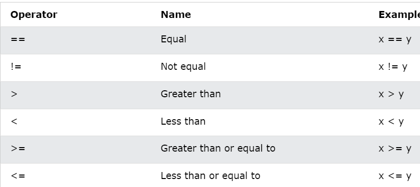
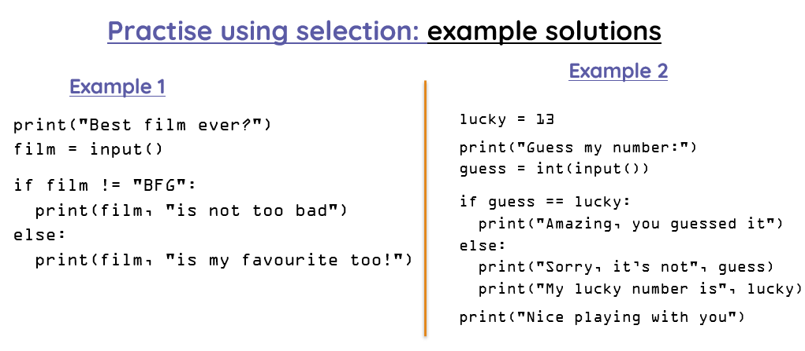

Page 5 of 15
Relational operators
Relational operators and selection (if .. else)


Activities
6Activity 6
Write a Python program to check if a number is positive, negative or zero. (USE CONDITIONS IF)
Sample Output :
Write the a number: 150
150 is a positive number!
7Activity 7
Write a program that takes in two integer numbers and an arithmetic operator (+, -, *, /). The program performs the specified operation on the two numbers and prints the result.
1. Ask the user to type two integer numbers.
2. Ask the user to type an arithmetic operator. The operator is a string variable.
3. Print the answer.
8Activity 8
Write a program that takes in the day of the week and prints whether it is a weekday or weekend. For example, if the user inputs Monday, then the program displays “Weekday”.
1. Read the day of the week. The day is a string variable.
2. If the day is Monday OR Tuesday OR Wednesday OR Thursday OR Friday then you should print the message "Weekday"
3. Else if the day is Saturday or Sunday then you should print "Weekend"
4. If the user gives anything else as an input then print "Enter a valid day"
9Activity 9
Write a program to print grades of students according to the table given below.
1. Use the float variable mark to get the mark of the student by the user
2. Use the [elif]
3. Print "The grade is "
A between 9-10
B between 8-9
C between 7-8
D between 6-7
E between 5-6
F less than 5
10Activity 10
This program checks whether an integer number entered by the user is even or odd.
A number is even if it is perfectly divisible by 2. When the number is divided by 2, we use the remainder (modulus) operator %.
HELP: If the remainder is not zero, the number is odd.
Sample: if number % i == 0:
https://www.w3schools.com/python/python_operators.asp
11Activity 11
COMPARE NUMBERS: Write a Python program where the user types three integers and returns the maximum of them.